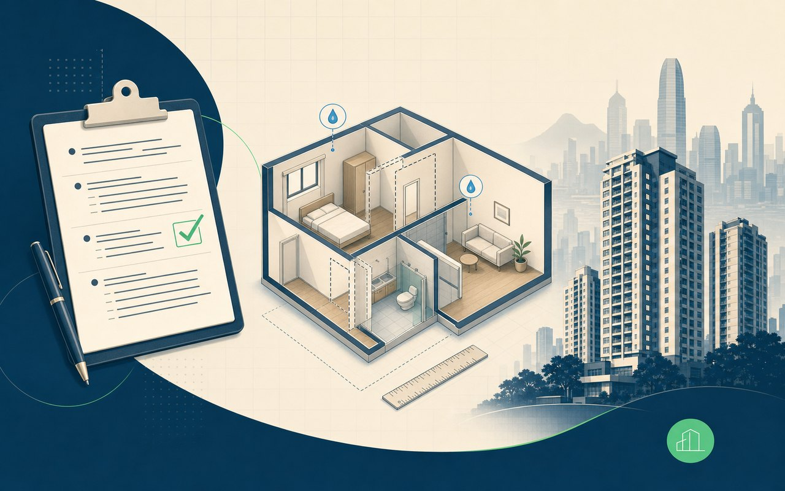

傳呢幾樣 我哋就答得到你
| 不論邊種情況 | 請先傳呢啲 |
|---|---|
| 共通資料 | 單位地區、現場相片或短片、問題描述、可到場時間 |
| 簡樸房查詢 | 再加：分間數量、有冇租約／AR2、有冇平面圖 |
| 水電維修 | 再加：漏水／跳掣／無電／爆喉位置、是否需要即日處理 |
簡樸通幫業主處理三件事：簡樸房資料檢視 / 上門初步檢查 / 水電緊急及日常維修。
傳低地區、相片、問題描述俾我哋，先幫你判斷下一步。

唔使自己研究太多。揀啱服務按落去，內頁有 WhatsApp 預設訊息範本，傳齊資料 1–2 分鐘就有人睇。
| 不論邊種情況 | 請先傳呢啲 |
|---|---|
| 共通資料 | 單位地區、現場相片或短片、問題描述、可到場時間 |
| 簡樸房查詢 | 再加：分間數量、有冇租約／AR2、有冇平面圖 |
| 水電維修 | 再加：漏水／跳掣／無電／爆喉位置、是否需要即日處理 |
簡樸通整理九龍城樣辦房 9 項改動、最低面積、黑廁通風同費用參考（非簡樸通報價）。
啟德道 400 呎一劏三、衙前塱道 270 呎一劏二；坊間約 20 間裝修公司一條龍（連結至原文）。
如需跟進制度時間表，可參閱 2026–2030 寬限期時間軸 → · 全部文章 / 新聞 → · 網站地圖 →
已有分間單位，應先處理寬限期登記文件；如未確定單位現況，則應先做認證前初步風險檢視，再決定是否投入工程或專業核證。
適合資料未齊、未肯定是否要約上門嘅業主
適合已有分間單位、想有人到場睇一次嘅業主
ⓘ HK$2,800 屬基本上門初步檢查 + 資料整理方向， 唔係工程總包價、唔係專業核證費、唔係 BHU-01 認證報告。 大型工程、整改、消防、結構、改水改電、專業簽署、施工或正式認證申請，必須見面後另議。 政府申請費及第三方專業費以官方公布及合資格人士獨立報價為準。
如情況不屬於以上兩類，可 WhatsApp 直接查詢，個案經理會按實際情況協助分流。
頭 2 項（滲漏水跡象、結構及間隔改動跡象）係市場上多數平價檢視冇 cover， 但卻係影響後續認證最常見嘅卡位；另外 8 項對應官方最低標準，協助業主先掌握主要風險。

檢視天花、牆身、窗邊、廁所、廚房及喉管附近是否有明顯水漬、發霉、剝落或潮濕跡象。發現明顯風險會建議轉介合資格師傅或專業人士進一步檢查。

根據業主提供嘅圖則、相片及現場可見情況，初步整理單位是否有明顯間隔、門窗、喉管或牆身改動跡象。涉及可疑結構會轉交合資格工程師或則師跟進。

初步量度每個分間單位是否接近最低面積要求。

檢視天花、橫梁、喉管底及實際可量度高度。

初步檢視防火門、自掩門、走廊闊度、逃生通道及消防設備。

初步檢視隔牆、地台、加建工程及結構風險。

檢視每間房是否設有獨立廁所及相關防水風險。

檢視供水點、洗滌盆、去水及防水安排。

檢視窗戶、採光、通風、抽氣及機械通風安排。

檢視現有水電錶安排及申請獨立錶嘅可行性。
以上 10 項由簡樸通顧問作非專業初步檢視；最終認證須由政府指明專業人士核證， 相關詳情以 政府簡樸房認證頁 為準。
按官方安排，現存分間單位須於指定登記期內申請寬限期登記， 才可在過渡安排下繼續出租。完成登記後，業主有 36 個月處理後續改裝及認證安排。 截至 2026 年 5 月中旬，媒體引述房屋局已接獲約 1.1 萬宗登記申請，認證申請仍屬起步階段。
寬限期登記是先將現存分間單位納入政府過渡安排； 簡樸房認證則是日後由指明專業人士視察及核證單位符合最低居住標準。兩者屬不同程序，不能混為一談。
先整理文件、再處理工程；先完成登記、再準備認證，按次序處理可減少成本及風險。
以下問題均來自常見查詢情境。每項均標示相應處理階段，方便業主快速判斷下一步。
「單位內有 4 間分間房，是否需要登記？」
「上次自己填政府表，已經被退三次。」
「物業由兩名共同業主持有，應由哪一方簽署？」
「有租約但沒有 AR2，是否仍可處理登記？」
「日後需要認證，但不清楚 BHU-01 應如何準備。」
「希望尋找工程公司，但擔心報價不清晰，完工後仍未能合規。」
先了解情況、再整理文件及提交申請；如有補件、認證前準備或工程整改，再按階段銜接處理。
我們協助整理單位資料、相片、圖則及初步疑點，並按需要接駁第三方合資格專業人士或工程方作獨立評估。 建築、結構、消防、測量、法律專業意見、認證簽署 — 由相關合資格人士獨立負責。 第三方報價、工程內容、施工安排、專業判斷及法律責任，均由相關第三方與業主獨立確認。
所有價錢先講清楚邊個包上門、邊個唔包上門。 市面 HK$1,000 左右嘅「快速檢視」多數只係肉眼掃一眼，驗到問題之後一樣要俾人搞； 我哋簡化做兩個 Plan，按需要揀一個就得。水電維修另設緊急及日常兩條線，按情況報價。
協助已完成登記及認證的業主，將單位的 登記、整改、認證狀態整成一份清楚資料， 日後在與合資格專業人士溝通或自行向相關方展示時，可更清楚呈現單位現況。
提醒： 簡樸通並非地產代理，亦不提供租務、招租、買賣撮合、議價、簽約或佣金安排服務。 如業主日後需要處理出租、出售或租約等事項， 應由持牌地產代理或律師按相關法例獨立處理及承擔責任。
已有分間單位 → 先整理寬限期登記文件；未確定單位狀況 → 先做認證前初步風險檢視；如未確定方向，可直接 WhatsApp 查詢。
按 WhatsApp 即代表你已閱讀並同意 服務邊界及免責聲明。